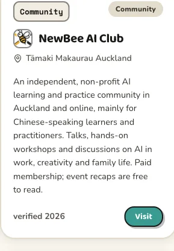
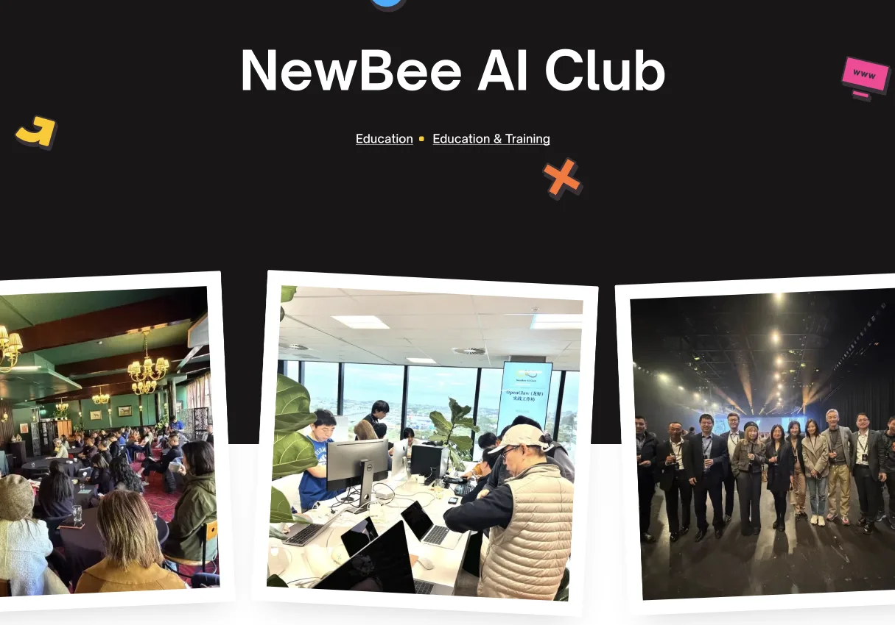
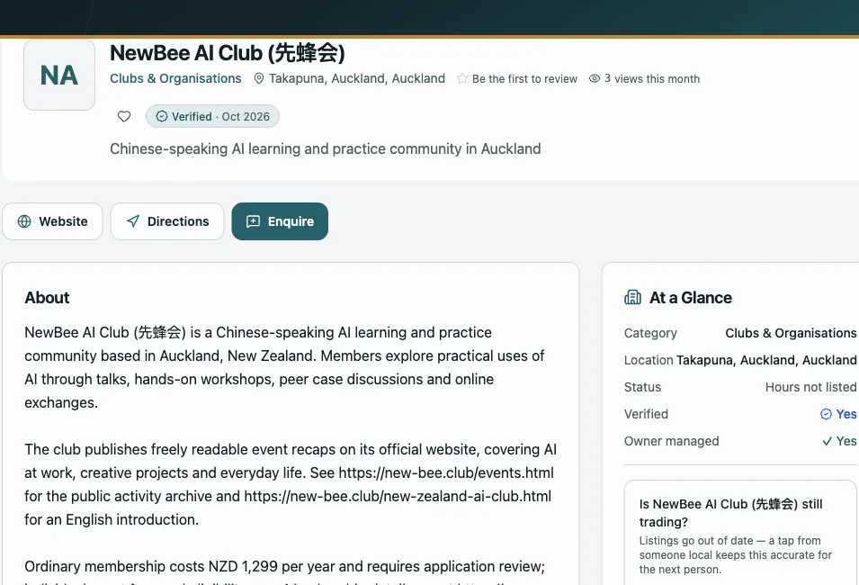
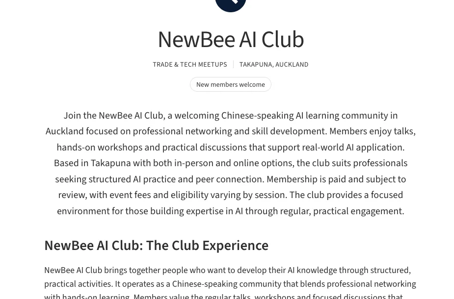
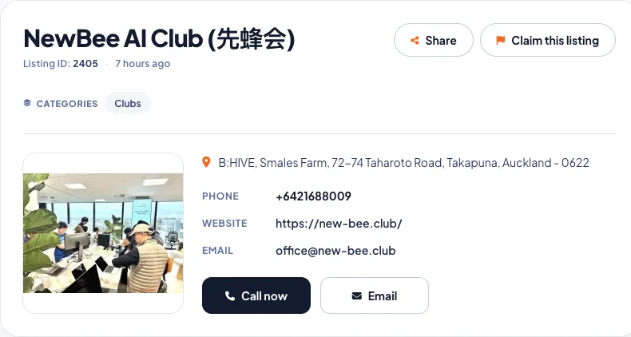
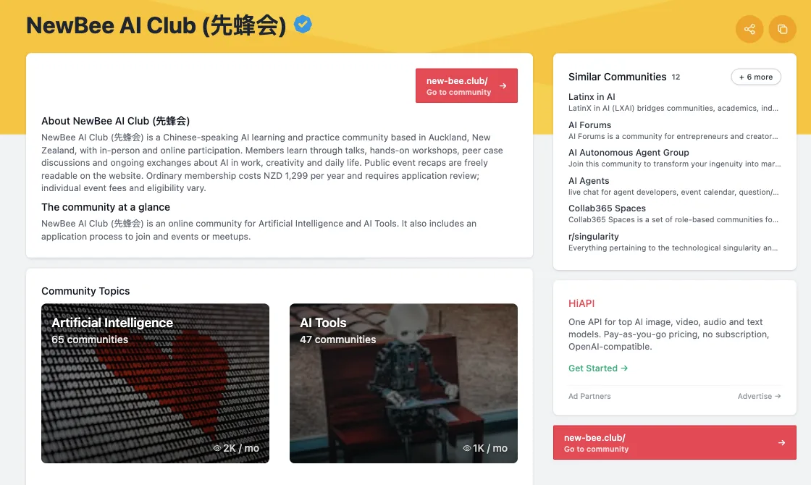
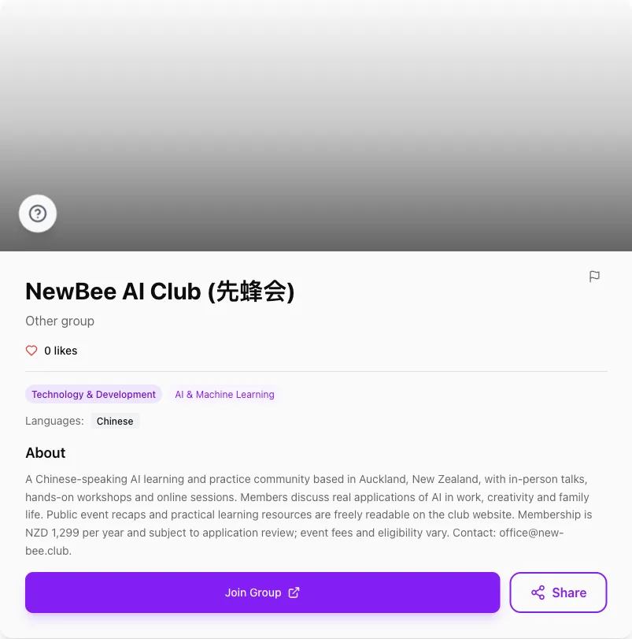
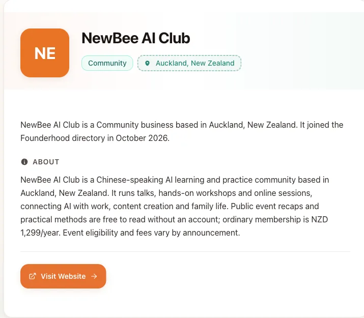
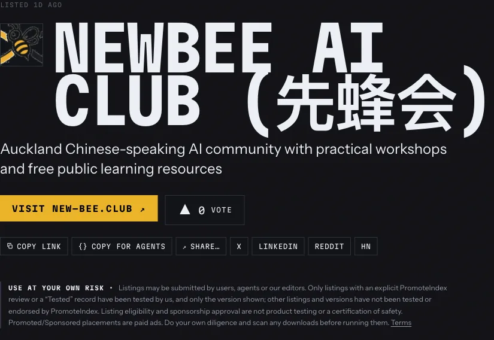

AI 社区地图
NZ AI Community
汇集新西兰 AI 社群、活动、播客与资讯的社区地图。先蜂会的介绍、交流语言和官网入口都可以在这里找到。


先蜂会 · 社区连接
在这些平台，也能找到我们。
认识展示先蜂会的平台与社区，
看看我们在各处的公开介绍。
从奥克兰到新西兰各地，发现身边的社区。
汇集新西兰 AI 社群、活动、播客与资讯的社区地图。先蜂会的介绍、交流语言和官网入口都可以在这里找到。

面向奥克兰的本地机构与服务目录。先蜂会页面展示主题讲座、实操工作坊和会员活动的照片，并提供俱乐部介绍与官网入口。

提供地区检索、地图和本地机构资料的新西兰平台。先蜂会位于 Clubs & Organisations 分类，方便读者了解活动形式与参与方式。

按地区和兴趣类别发现新西兰俱乐部的平台。先蜂会列于 Takapuna 的 Trade & Tech Meetups 分类，介绍学习实践、交流形式和会员安排。

提供新西兰本地商家与组织信息的平台。先蜂会条目展示活动照片、俱乐部介绍、公开联系方式和官网链接。

沿着共同的兴趣，找到一起学习与实践的人。
按兴趣主题和交流形式发现社群的平台。先蜂会页面涵盖 AI 学习与工具实践，并说明公开活动回顾和会员参与方式。

按主题和语言寻找线上社群的平台。先蜂会条目位于 AI & Machine Learning 分类，标注中文交流，介绍线下与线上学习活动。

面向创业者与项目的发现平台，设有企业和社区分类。先蜂会以奥克兰 Community 条目展示实操学习、公开资源与官网入口。

汇集项目、产品和社群的开放目录，提供网页及结构化资料。先蜂会位于 Communities & Events 分类，介绍实操工作坊和公开学习资源。
